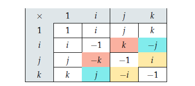

参考资料：Krasjet的四元数与三维旋转
定义
四元数可以写为如下形式：
$$
q=a+bi+cj+dk\quad (a,b,c,d\in \mathbb R)
$$其中：
$$
i^2=j^2=k^2=ijk=-1
$$上面的公式就决定了四元数一切性质，四元数的定义和复数非常类似，唯一的区别就是四元数一共有三个虚部 $(i,j,k)$，而复数只有一个。
性质
模长
一个四元数 $q=a+bi+cj+dk$ 的模长为：
$$
||q||=\sqrt{a^2+b^2+c^2+d^2}
$$如果用标量向量有序对的形式进行表示的话，$q=[s,\mathbf v]$ 的模长为：
$$
\begin{aligned}
||q||&=\sqrt{s^2+||\mathbf v||^2} \\
&=\sqrt{s^2+\mathbf v\cdot\mathbf v} \qquad (\mathbf v\cdot\mathbf v=||\mathbf v||^2)
\end{aligned}
$$
四元数加法和减法
与复数类似，四元数的加法只需要将分量相加就可以了。如果我们有两个四元数$q_1=a+bi+cj+dk$，$q_2=e+fi+gj+hk$，那么它们的和为：
$$
\begin{aligned}
q_1+q_2&=a+bi+cj+dk+e+fi+gj+hk \\
&=(a+e)+(b+f)i+(c+g)j+(d+h)k
\end{aligned}
$$减法也是同理：
$$
q_1-q_2=(a-e)+(b-f)i+(c-g)j+(d-h)k
$$如果四元数是以标量向量有序对形式定义的，比如说 $q_1=[s,\mathbf v]$，$q_2=[t,\mathbf u]$，那么：
$$
q_1\pm q_2=[s\pm t, \mathbf v\pm \mathbf u]
$$
标量乘法
如果我们有一个四元数$q = a + bi + cj + dk$ 和一个标量$s$，那么它们的乘积为：
$$
\begin{aligned}
sq &= s(a + bi + cj + dk)\\
&= sa + sbi + scj + sdk)
\end{aligned}
$$四元数与标量的乘法是遵守交换律的，也就是说$sq=qs$。
四元数乘法
四元数之间的乘法比较特殊，它们是不遵守交换律的，也就是说一般情况下$q_1q_2 \neq q_2q_1$。除了交换律之外，我们经常使用的结合律和分配律在四元数内都是成立的。那么，如果有两个四元数$q_1 = a + bi + cj + dk$和$q_2 = e + f i + gj + hk$，那么它们的乘积为：
$$
\begin{aligned}
q_1q_2&=(a + bi + cj + dk)(e + f i + gj + hk) \\
&= ae + a f i + agj + ahk+\\
&\quad bei + b f i2 + bgij + bhik+ \\
&\quad cej + c f ji + cgj2 + chjk+ \\
&\quad dek + d f ki + dgkj + dhk2
\end{aligned}
$$再根据下图的表格（表格中有颜色的格子代表着乘法交换律不成立）：

我们就能进一步简化四元数乘积的结果，于是就有了如下定理：对任意四元数 $q_1=[s,\mathbf v]$, $q_2=[t,\mathbf u]$，$q_1q_2$ 的结果是：
$$
q_1q_2=[st-\mathbf v\cdot\mathbf u,s\mathbf u+t\mathbf v+\mathbf v \times\mathbf u]
$$
纯四元数
如果一个四元数能写成这样的形式：
$$
v=[0,\mathbf v]
$$那么我们称$v$是一个纯四元数，即仅有虚部的四元数。
四元数的逆和共轭
一个四元数 $q = a + bi + cj + dk$ 的共轭为 $q^\ast = a - bi - cj - dk$ 。如果用标量向量有序对的形式来定义的话，$q = [s,\mathbf v]$ 的共轭为$q^\ast = [s,−\mathbf v]$ 。共轭四元数的一个非常有用的性质就是：
$$
\begin{aligned}
qq^\ast&=[s,\mathbf v]\cdot[s,−\mathbf v] \\
&=[s^2+\mathbf v\cdot \mathbf v,0] \\
&= s^2+x^2+y^2+z^2 \\
&= ||q||^2
\end{aligned}
$$可以看到最终结果是一个实数，并且它是四元数模长的平方，而且满足 $qq^\ast=q^\ast q$。
我们定义$q^{-1}$是$q$的逆，并且有:
$$
\begin{aligned}
qq^{-1}&=q^{-1}q=1 \qquad (q\neq0) \\
q^{-1}&=\frac {q^*}{||q||^2}
\end{aligned}
$$
四元数与3D旋转
定理：3D旋转公式（四元数型，正交情况）
当$\mathbf v_\bot$ 正交于旋转轴 $\mathbf u$ 时，旋转 $\theta$ 角度之后的 $\mathbf v_\bot’$ 可以使用四元数乘法来获得。令$v_\bot= [0, \mathbf v_\bot]$ ，$q = [cos(\theta), sin(\theta)\mathbf u]$，那么：
$$
v_\bot’=qv_\bot
$$
定理：3D旋转公式（四元数型，平行情况）
当$\mathbf v_{||}$ 平行于旋转轴 $\mathbf u$ 时，旋转 $\theta$ 角度之后的 $\mathbf v_{||}’$ 用四元数可以写为：
$$
v_{||}’=v_{||}
$$
定理：3D旋转公式（四元数型，一般情况）
任意向量$\mathbf v$沿着以单位向量定义的旋转轴$\mathbf u$旋转$\theta$度之后的$\mathbf v’$可以使用四元数乘法来获得。令$v=[0,\mathbf v]$，$q = [\frac{1}{2}cos(\theta), \frac{1}{2}sin(\theta)\mathbf u]$，那么：
$$
v’=qvq^*=qvq^{-1}
$$
定理：3D 旋转公式（矩阵型）
任意向量$\mathbf v$沿着以单位向量定义的旋转轴$\mathbf u$旋转$\theta$度之后的$\mathbf v’$可以使用矩阵乘法来获得。令 $a=cos(\frac{1}{2}\theta)$，$b=sin(\frac{1}{2}\theta)u_x$，$c=sin(\frac{1}{2}\theta)u_y$，$a=d=sin(\frac{1}{2}\theta)u_z$，那么：
$$
v’=
\begin{bmatrix}
1-2c^2-2d^2&2bc-2ad&2ac + 2bd \\
2bc + 2ad&1-2b^2-2d^2&2cd-2ab \\
2bd-2ac&2ab+2cd&1-2b^2-2c^2
\end{bmatrix} v
$$
四元数，欧拉角和旋转矩阵的转换
根据上一章我们知道四元数本身就代表了一种旋转，这一章我们将了解它和旋转矩阵以及欧拉角之间的关系。
四元数转旋转矩阵
已知四元数 $q=(q_0,q_1,q_2,q_3)$ ，那么旋转矩阵为：
$$
R=\begin{bmatrix}
q_0^2+q_1^2-q_2^2-q_3^2 & 2(q_1q_2-q_0q_3) & 2(q_1q_3+q_0q_2) \\
2(q_1q_2+q_0q_3) & q_0^2-q_1^2+q_2^2-q_3^2 & 2(q_2q_3-q_0q_1) \\
2(q_1q_3-q_0q_2) & 2(q_2q_3+q_0q_1) &q_0^2-q_1^2-q_2^2+q_3^2
\end{bmatrix}
$$
旋转矩阵转四元数
已知旋转矩阵：
$$
R=\begin{bmatrix}
r_{11}&r_{12}&r_{13} \\
r_{21}&r_{22}&r_{23} \\
r_{31}&r_{32}&r_{33}
\end{bmatrix}
$$那么求解四元数的方法可以从以下公式中得到：
$$
r_{11}+r_{22}+r_{33}=2q_0^2-1\Rightarrow q_0=\pm \frac{1}{2} \sqrt{1+r_{11}+r_{22}+r_{33}} \\
r_{11}-r_{22}-r_{33}=2q_1^2-1\Rightarrow q_1=\pm \frac{1}{2} \sqrt{1+r_{11}-r_{22}-r_{33}} \\
r_{22}-r_{11}-r_{33}=2q_2^2-1\Rightarrow q_2=\pm \frac{1}{2} \sqrt{1+r_{22}-r_{11}-r_{33}} \\
r_{33}-r_{11}-r_{22}=2q_3^2-1\Rightarrow q_3=\pm \frac{1}{2} \sqrt{1+r_{33}-r_{11}-r_{22}}
$$从这里我们可以得到好几组解，于是又有了如下限制：
$$
r_{12}+r_{21}=2(q_1q_2-q_0q_3)+2(q_1q_2+q_0q_3)=4q_1q_2 \\
r_{21}-r_{12}=2(q_1q_2+q_0q_3)-2(q_1q_2-q_0q_3)=4q_0q_3 \\
r_{13}+r_{31}=2(q_1q_3+q_0q_2)+2(q_1q_3-q_0q_2)=4q_1q_3 \\
r_{13}-r_{31}=2(q_1q_3+q_0q_2)-2(q_1q_3-q_0q_2)=4q_0q_2 \\
r_{23}+r_{32}=2(q_2q_3-q_0q_1)+2(q_2q_3+q_0q_1)=4q_2q_3 \\
r_{32}-r_{23}=2(q_2q_3+q_0q_1)-2(q_2q_3-q_0q_1)=4q_0q_1
$$这样只要得到$q_0$到$q_3$中的任意一个就能求出其他的值，假设我们先求$q_0$的值，则有：
$$
q_0=\pm \frac{1}{2} \sqrt{1+r_{11}+r_{22}+r_{33}} \\
q_1=\frac{r_{32}-r{23}}{4q_0} \\
q_2=\frac{r_{13}-r{31}}{4q_0} \\
q_3=\frac{r_{21}-r{12}}{4q_0}
$$从上式中可以看到，求得的四元数有两个，但是他们表示的是同一种旋转关系（一种是沿着$\mathbf u$转$\theta$角，另一种是沿着$-\mathbf u$转$-\theta$角）。至于先求$q_0$到$q_3$中的哪个值，在实际使用时应该全部一起求，看哪个值大，就选取哪个，以防止某一项在出现0时无法计算的情况。
欧拉角转四元数
已知欧拉角：$\alpha$、$\beta$、$\gamma$，四元数为：
$$
q=\begin{bmatrix}
cos\frac{\gamma}{2} \\
0 \\
0 \\
sin\frac{\gamma}{2}
\end{bmatrix}
\begin{bmatrix}
cos\frac{\beta}{2} \\
0 \\
sin\frac{\beta}{2} \\
0
\end{bmatrix}
\begin{bmatrix}
cos\frac{\alpha}{2} \\
sin\frac{\alpha}{2} \\
0 \\
0
\end{bmatrix}=\begin{bmatrix}
cos\frac{\alpha}{2}cos\frac{\beta}{2}cos\frac{\gamma}{2}+sin\frac{\alpha}{2}sin\frac{\beta}{2}sin\frac{\gamma}{2} \\
sin\frac{\alpha}{2}cos\frac{\beta}{2}cos\frac{\gamma}{2}-cos\frac{\alpha}{2}sin\frac{\beta}{2}sin\frac{\gamma}{2} \\
cos\frac{\alpha}{2}sin\frac{\beta}{2}cos\frac{\gamma}{2}+sin\frac{\alpha}{2}cos\frac{\beta}{2}sin\frac{\gamma}{2} \\
cos\frac{\alpha}{2}cos\frac{\beta}{2}sin\frac{\gamma}{2}-sin\frac{\alpha}{2}sin\frac{\beta}{2}cos\frac{\gamma}{2}
\end{bmatrix}
$$
四元数转欧拉角
已知四元数 $q=(q_0,q_1,q_2,q_3)$ ，那么欧拉角为：
$$
\begin{bmatrix}
\alpha \\
\beta \\
\gamma
\end{bmatrix}=
\begin{bmatrix}
atan2(2(q_0q_1+q_2q_3),1-2(q_1^2+q_2^2)) \\
arcsin(2(q_0q_2-q_1q_3)) \\
atan2(2(q_0q_3+q_1q_2),1-2(q_2^2+q_3^2))
\end{bmatrix}
$$但是当$\beta$角度为$\pm90$度时，四元数反向计算欧拉角时会出现奇点，是无法计算的。也就是出现了万向锁问题，这时候我们通常令$\alpha=0$，然后解出欧拉角的值。